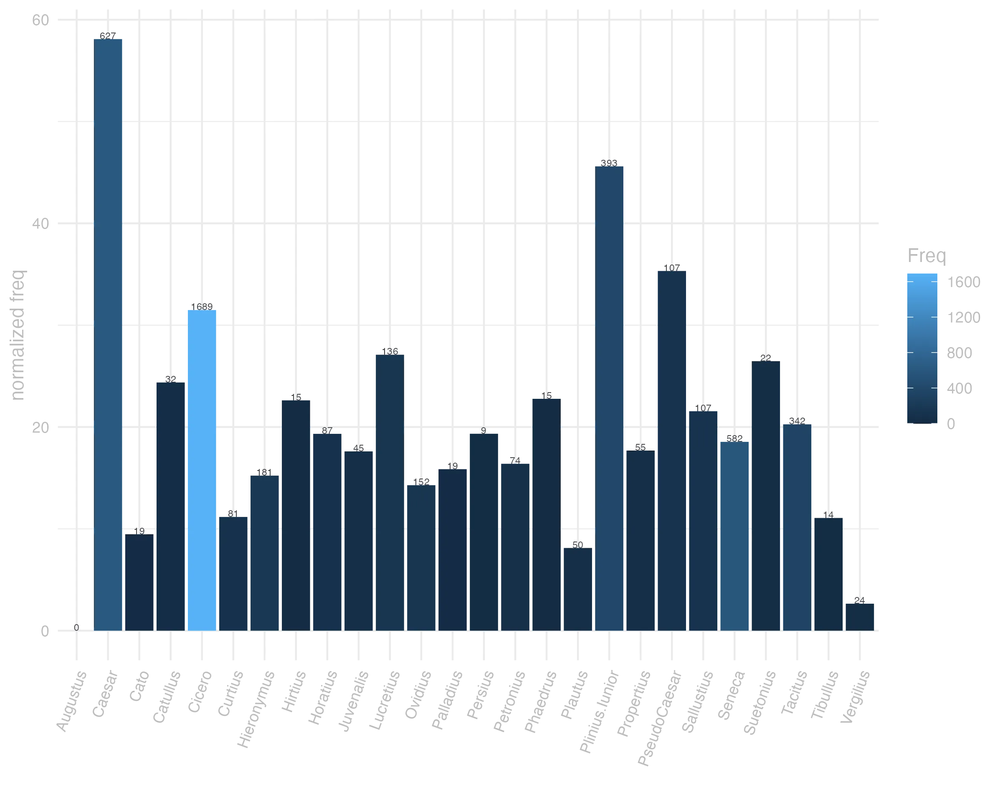
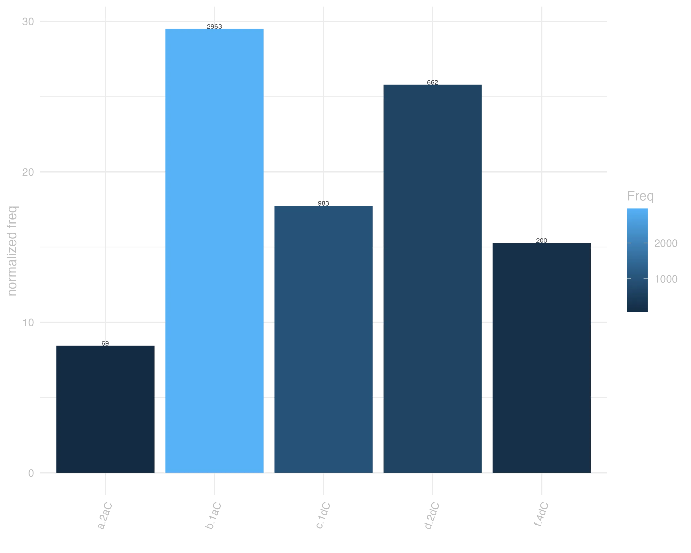

38 quod
38.0.0.1 forma
Classe: conjunção subordinativa
Flexão: indeclinável
V Quod Conj.
F Quod conj.
no data
38.0.0.2 significado
Grupo semântico:
V 1 porque
F 1 porque, que, para que, por quanto, mais quanto. Cic.
V 2 in principio clausulae ponitur pro Sed
<br> V 2 quod si mas se
38.0.0.3 uso
Ranking de frequência: 47 ª posição neste corpus
nisi idcirco se facilius hiemem toleraturos putant quod nudi in conuiuiis saltare didicerunt Cic.Catil.2.23.11
A não ser achem que vão aguentar o inverno mais facilmente, porque aprenderam a dançar nus nos banquetes. JDD
adice nunc quod maiore corporis sarcina animus eliditur et minus agilis est Sen.Ep.15.2
Acrescenta agora que com o volume do corpo maior o espírito é sufocado e é menos ágil. JDD
agamus deo gratias quod nemo in uita teneri potest calcare ipsas necessitates licet Sen.Ep.12.10
Agradeçamos ao deus por ninguém poder ser retido na vida: é permitido pisar as próprias necessidades. JDD
agite dis inmortalibus gratias quod eum docetis esse crudelem qui non potest discere Sen.Ep.7.5
Dai graças aos deuses imortais por ensinardes a ser cruel aquele que não pode aprender. JDD
causa autem haec est quod inanes omnium bonorum sumus uitae laboramus Sen.Ep.22.17
E a causa é esta: é que estamos vazios de todos os bens, sofremos a perda da vida. JDD(*)
reprehendistis a patre quod semigrarit Cic.Cael.18
O recriminastes porque deixou a casa de seu pai. JDD
non est autem uel ob hoc unum amanda paupertas quod a quibus ameris ostendet Sen.Ep.20.7
Ora, a pobreza não deve ser só por esse motivo amada: porque mostra aqueles pelos quais és amado? JDD
suo ista tempori reseruentur eo quidem magis quod tu non dubitas de prouidentia sed quereris Sen.Prov.1.4
Que essas coisas sejam reservadas a seu tempo, tanto mais porque, na verdade, tu não duvidas da providência, mas te queixas. JDD
multo etiam grauius quod sit destitutus queritur Caes.Gal.1.16.6
Queixa-se ainda com mais amargor de ter sido abandonado. JDD
Umbrenus quod in Gallia negotiatus erat plerisque principibus ciuitatium notus erat atque eos nouerat Sal.Cat.40.2
Umbreno, porque tinha feito negócios na Gália, era conhecido da maioria da principais figuras das cidades e os conhecia. JDD


